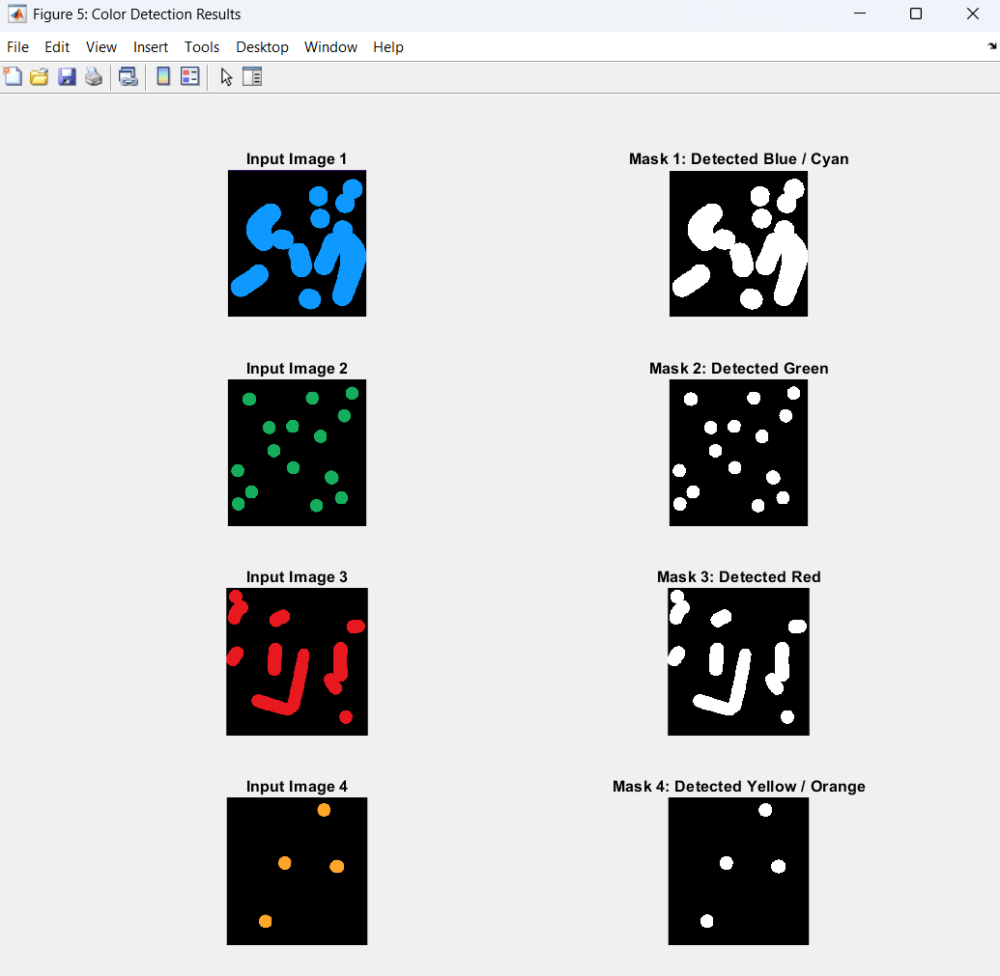
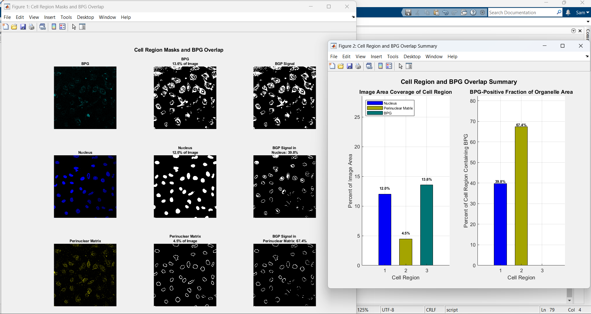
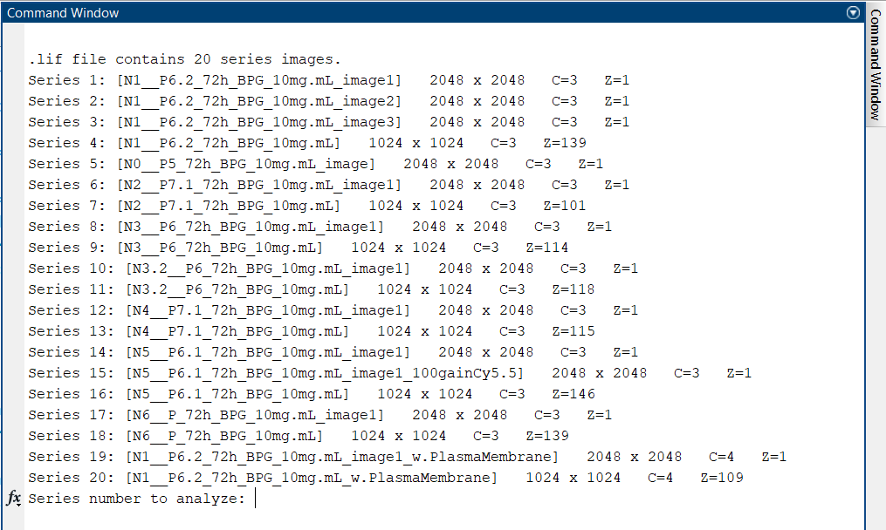
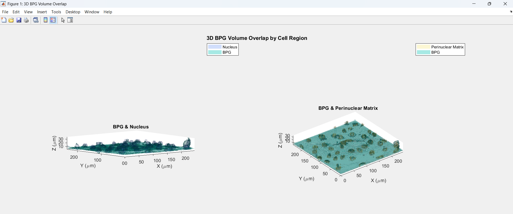
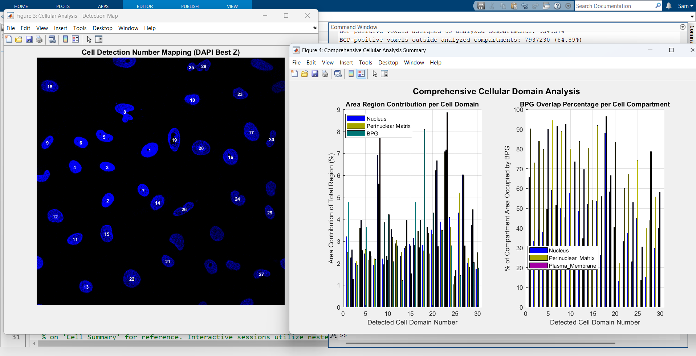
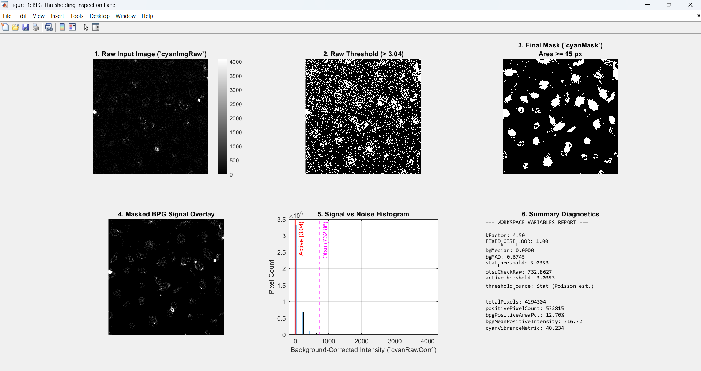
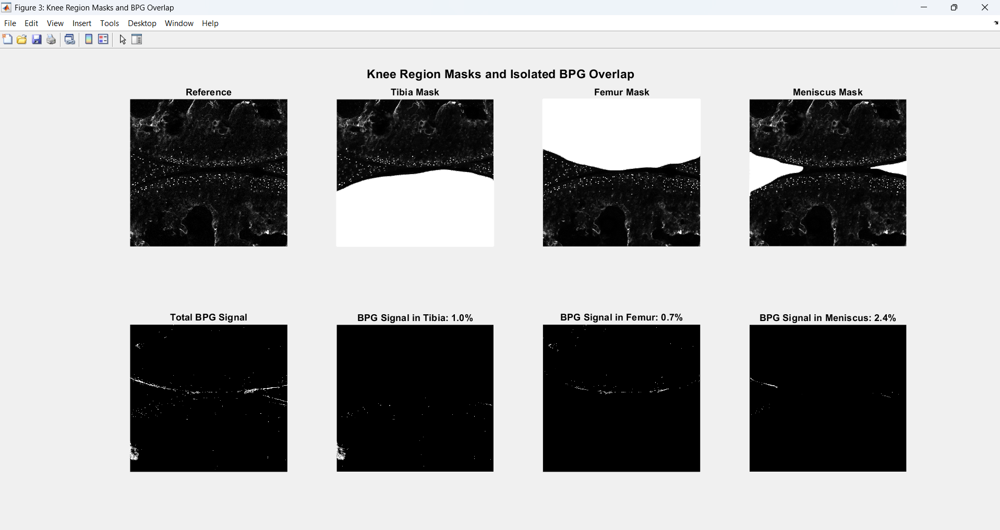
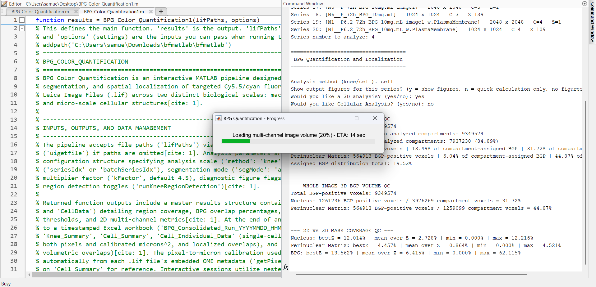
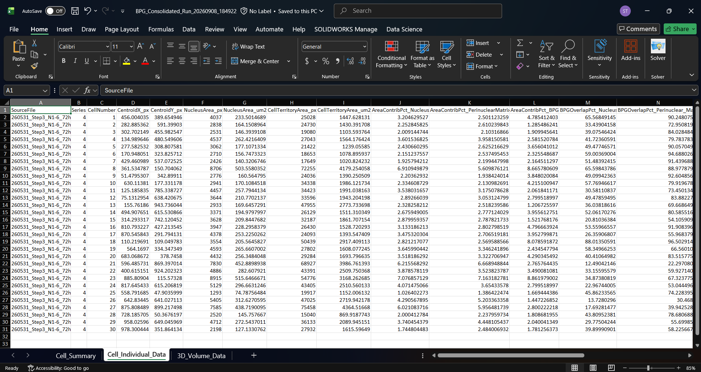
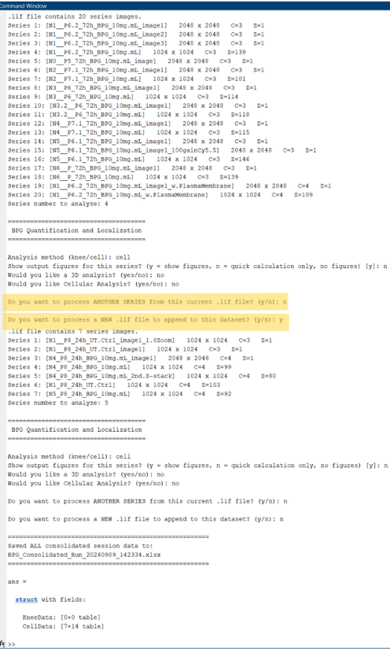

This MATLAB pipeline was built for a research project quantifying the fluorescent signal of BPG (biomimetic proteoglycan) within cells, to explore where the compound localizes and concentrates at both the cellular and tissue level. It is an interactive, user-guided tool that reads raw Leica confocal microscopy files (.lif) directly, automatically segments biologically relevant regions (nucleus, perinuclear matrix, plasma membrane, and macroscopic tissue regions), and calculates the percentage of BPG signal overlapping with and localizing to each region. It supports both single-cell and comprehensive joint analysis, including full 3D z-stack quantification, and exports every measurement to a consolidated Excel workbook so quantification data from multiple input files can be compared. The tool was designed with full user interactivity in mind (file/series selection, manual segmentation mode, and thresholding sensitivity are all configurable at runtime) so it could be used repeatedly across a large image dataset without requiring rewriting for each new file.
Quantifying where a fluorescent signal localizes within cells and tissue is normally a slow, manual process. A researcher must eyeball or hand-trace regions of interest image by image, which doesn't scale to a real dataset and introduces human inconsistency. Additionally, raw confocal microscopy data comes packaged in proprietary multi-series, multi-channel, and often multi-z-plane files (.lif). Before any data could be measured, the tool needed to reliably read the format, correctly separate fluorophore channels from real image data, and adapt to files with different numbers of channels and stack depths. The goal was a single tool flexible enough to go from a raw microscope file straight to publication-ready, comparable numbers with minimal manual intervention.
Rather than designing the final tool up front, I built this pipeline in stages. Each iteration solved a real limitation I ran into using the previous version.
The project began as a simple proof of concept: given an image, detect pixels belonging to a handful of target colors and generate binary masks for each one. At this stage, the code did nothing biologically meaningful; it was purely a color-segmentation exercise using basic intensity thresholding to answer the question, "can I reliably isolate a color channel and turn it into a clean mask?" This established the core masking logic (threshold → binary mask → clean up with morphological operations) that every later version of the pipeline still relies on.

Figure 1: Early binary masking output from the initial proof-of-concept version.
Once masking was reliable, the next iteration added the metric calculations the research required: percent area coverage of each region and BPG overlap percentage (defined as "of the pixels making up a given compartment, what percentage are BPG-positive?"). This turned the tool from a segmentation demo into an actual quantification instrument. The tradeoff introduced here was one of interpretation: overlap percentage answers "how concentrated is BPG within this region," but doesn't say anything about how much of the total BPG signal in the image that region accounted for.
Both core metrics reduce to simple ratios over binary masks. For a region mask R and the BPG signal mask B, Coverage% = (|R| ÷ total image pixels) × 100, and Overlap% = (|R ∩ B| ÷ |R|) × 100 — of the pixels belonging to a region, what fraction are also BPG-positive. Because both masks are already binary (thresholded), these ratios reduce to pixel-counting and logical-AND operations rather than continuous calculus, but they set up the counting convention that every later, more complex metric (per-cell, per-slice, per-voxel) reuses.
As soon as masks were being generated, it became clear I needed a way to visually audit whether the segmentation was accurate before trusting the code's data. I added multiple diagnostic figures (mask overlays, per-region coverage bar charts, and overlap-percentage bar charts) purely for troubleshooting convenience. This slowed down each run slightly, but the tradeoff was worth it. Without visual confirmation, a bad threshold or mis-segmented region could silently corrupt an entire dataset, and these figures make bad segmentation immediately obvious.

Figure 2: Diagnostic mask overlays used to verify segmentation quality visually.
The early version worked on RGB color images, which is not how confocal microscopy data is structured. Confocal data is multi-channel intensity data (one grayscale image per laser/fluorophore), not a single RGB photo. I rewrote the core detection logic to operate on arbitrary intensity channels rather than hard-coded colors, mapping each channel to a biological target (Nucleus, BPG target, Plasma Membrane, Perinuclear Matrix) via a configurable lookup table. This pivotal architectural change took the project from a color-masking script to a confocal microscopy quantification tool.
Up to this point, images had to be manually exported and saved before the script could touch them, which was slow and introduced an unnecessary manual step. I integrated the Bio-Formats MATLAB toolbox so the pipeline could open Leica's native .lif container format directly, pulling both the raw pixel data and the embedded OME metadata (including the microscope's physical pixel calibration) straight from the source file. This removed a manual export step from the workflow entirely and meant measurements could be reported in real-world microns in addition to raw pixels, at the cost of adding an external toolbox dependency.
Bio-Formats exposes OME metadata fields (getPixelsPhysicalSizeX/Y/Z) that report how many real-world microns a single pixel step represents along each axis. Multiplying the per-pixel micron widths together (umPerPixX × umPerPixY) gives the physical area a single pixel represents (µm²), and including the Z step (× umPerPixZ) gives the physical volume a single voxel represents (µm³). Every micron-based area or volume calculated later in the pipeline is just that per-pixel or per-voxel physical constant multiplied by a mask's pixel or voxel count. The calibration is scraped once per series and reused everywhere downstream. If a .lif file has no embedded calibration, this constant is deliberately left as NaN rather than guessed, so results correctly read as missing instead of silently wrong.
A single .lif file frequently contains many imaging series (different fields of view, different acquisition settings, etc.), not just one image. I added the ability to target and analyze a specific series by index, instead of forcing the script to process an entire file as one dataset. This gave the tool the granularity actual lab workflows needed.

Figure 3: Example of the user's command window series selection catalog.
Z-stacks contain many slices, but not every slice is equally useful for a 2D analysis; some are blurry, saturated, or otherwise unrepresentative of the structure being measured. Rather than making the user pick a slice by eye for every series (introducing bias), I built composite, weighted scoring functions that automatically select the best plane for a given purpose. For general tissue focus, each Z slice is scored on edge sharpness and fine texture to find the sharpest structural plane. For the Cyan/BPG channel specifically, a second, more specialized scoring function evaluates candidate slices near the best nuclear plane and additionally rewards slices where cyan signal genuinely sits on or near the nucleus rather than scattered background, while penalizing saturation and sparse signal. This automated slice-picking removed a subjective, image-by-image manual step and made comparisons between different runs of the same file, or between files, consistent.
Both selectors are weighted linear combinations of several independent image-derived features rather than a single threshold. The structural focus score is s = 0.5 · std (gradient magnitude) + 0.35 · mean (gradient magnitude) + 0.15 · std (Laplacian response), where gradient magnitude comes from a Sobel filter (√(Gx² + Gy²)) and captures edge sharpness, while the Laplacian term captures fine high-frequency texture (a blurry slice scores low on both). The Cyan-channel selector blends six terms with hand-tuned weights: how much cyan signal touches a thin ring drawn around the nucleus, the Jaccard similarity (intersection-over-union) between the cyan mask and the nucleus mask, the fraction of cyan signal actually inside the nucleus, penalties for saturated or empty background pixels, and a background-illumination-uniformity score. Whichever Z-plane produces the highest resulting score is selected automatically for that series.
Confocal acquisitions are frequently z-stacks rather than single 2D planes. I extended the thresholding and masking logic into the third dimension, building full 3D binary volumes per channel and computing volumetric overlap statistics in addition to the existing 2D metrics. This was one of the more computationally expensive additions (3D masking, isosurface rendering, and volumetric overlap all scale with stack depth), so I made it opt-in per run rather than mandatory, to avoid punishing runtime on 2D-only analyses.

Figure 4: Volumetric 3D reconstruction from a z-stack acquisition.
Whole-image and per-cell 3D volumes (µm³) are estimated using trapezoidal numerical integration. For each Z slice, the 2D voxel count of a mask is multiplied by the per-voxel physical area (µm²) scraped from the file's calibration, giving one cross-sectional area value per slice. Plotting that area against real depth (using the file's actual Z-step size in microns, not just a slice index) produces a sampled area-vs-depth function, which MATLAB's trapz then numerically integrates. The region between two measured slices is approximated as a trapezoid connecting their two areas rather than assuming a constant cross-section in between. This is applied identically at the whole-image scale and at the single-cell scale (per-nucleus and per-perinuclear-region volumes), and correctly returns NaN rather than a fabricated number whenever a file's Z-calibration is missing.
Whole-image statistics answer "how much BPG signal is present overall," but not "which cells are driving that signal." I implemented single-cell segmentation using a Euclidean distance transform on the binary nucleus mask, combined with an H-minima transform to suppress over-segmentation, followed by a watershed transform to split touching or clustered nuclei into individually indexed cells. Each detected cell was given its own region of interest for every downstream metric. The tradeoff is that watershed segmentation is sensitive to its smoothing/suppression parameters (too little suppression fragments a single nucleus into several "cells," too much merges genuinely separate cells), so this required careful tuning and became one of the strongest use cases for the diagnostic figures added earlier.

Figure 5: Individually indexed cells identified via watershed segmentation and corresponding metrics.
The Euclidean distance transform converts a binary nucleus mask into a map where every background pixel's value is its distance to the nearest nucleus pixel; inverting this map turns each nucleus into a "basin." An H-minima transform suppresses shallow, spurious local minima in that inverted map by a fixed height threshold before the watershed transform is applied. This is specifically what prevents a single noisy nucleus from being fragmented into several separate "cells." The watershed algorithm then floods each basin outward until competing basins meet, producing a label matrix that assigns every pixel in the image to exactly one nucleus.
Watershed segmentation works well for splitting touching nuclei, but it only ever defines the nucleus itself and says nothing about where one cell's cytoplasm ends and its neighbor's begins, which matters for compartments like the plasma membrane and perinuclear matrix. When a plasma-membrane channel is available, I integrated MATLAB's Cellpose interface, a pretrained deep-learning cell-segmentation model, to detect true cell boundaries directly from the membrane and DAPI images. I included automatic or user-specified cell diameter estimation, removal of cells touching the image border, and filtering out segmentations for artifacts below a minimum size. Because a neural-network segmentation step can fail on unusual or noisy images, the pipeline wraps the Cellpose call in error handling and automatically falls back to a classical distance-based territory assignment (an approximate Voronoi tessellation seeded by each detected nucleus) whenever a membrane channel isn't available, or Cellpose itself errors out. Either way, every cell ends up with a full territory (not just a nucleus) so per-cell perinuclear and membrane overlap statistics are computed against an actual cell boundary rather than an arbitrary radius.
The fallback territory assignment is a discrete Voronoi tessellation computed via a second application of the Euclidean distance transform. For every pixel in the image, the transform returns the index of its nearest labeled nucleus, and reshaping that index map back into the image's dimensions assigns every pixel to its closest cell. This is mathematically equivalent to drawing perpendicular-bisector boundaries between neighboring nuclei, without needing to explicitly construct those boundaries. Cell footprint area, in either mode, is then just a pixel (or voxel) count within a given label, scaled by the same physical calibration constant used everywhere else in the pipeline.
Fixed or manually picked thresholds don't generalize well across images with different background noise levels, so I implemented an adaptive thresholding scheme based on median absolute deviation (MAD) noise estimation. The background noise level is statistically estimated per channel, and the active threshold is set at a configurable multiplier above that estimated noise floor, with a fixed floor enforced as a safety net. This lets the same script handle images with meaningfully different signal-to-noise characteristics without requiring the user to hand-pick a threshold for every single file.

Figure 6: Troubleshooting window for dynamic signal threshold tuning.
The active threshold for a channel is set at T = median(background) + k · MAD(background), where MAD is the median absolute deviation of background pixel intensities and k is a configurable multiplier (default 4.5). MAD is used instead of standard deviation because it is far less sensitive to outliers, and the most BPG-positive pixels in an image are exactly the kind of outlier that would otherwise inflate a standard-deviation-based noise estimate and push the threshold too high. In the rare case where a background region has essentially zero spread (MAD ≈ 0), the code substitutes a Poisson-noise-consistent estimate, 0.6745·√median, as a safety fallback so the threshold never collapses to just the median itself.
Cellular-level detail is only half the picture for this research question. I also needed tissue-level context. I built a parallel analysis mode for whole knee-joint images that automatically detects the joint line and separates femur, tibia, and meniscus regions, with a user-guided assisted mode and a fully manual freehand-drawing mode as fallbacks when automatic segmentation isn't reliable enough for a given image. This allowed the same tool to answer both "where in this cell is BPG concentrating" and "which anatomical region of the joint has the most signal," at the cost of maintaining two somewhat different segmentation pipelines within one codebase.

Figure 7: Macro-scale segmentation of femur, tibia, and meniscus regions.
Automatic knee segmentation is accepted or routed into assisted correction using its own weighted quality score (0 to 1), combining four checks: whether femur + tibia + meniscus areas roughly reconstruct the whole tissue mask, whether each region is large enough to be plausible, how much of the combined region mask leaks outside the detected tissue boundary, and whether a meniscus region was found at all. A low score sends the image to assisted or manual correction instead of silently accepting a bad automatic segmentation. Signal "vibrance", a custom metric reported for every knee image, is defined as (BPG-positive area% × mean positive-pixel intensity%) ÷ 100, giving a single number that only rises when a region is both extensively covered and strongly signaled, rather than scoring a small, extremely bright patch the same as a broad, moderately bright one.
As the pipeline grew to include 3D volumetric analysis, per-cell watershed and deep-learning segmentation, and multiple diagnostic figures, individual runs got noticeably slower. I added a waitbar with a live ETA calculation so the user has visibility into progress during long batch runs instead of staring at a frozen-looking MATLAB window.

Figure 8: Custom generated progress waitbar.
Manually copying results from the MATLAB workspace after every run wasn't sustainable once the tool produced this many metrics across multiple analysis modes. I added automatic export to a timestamped, multi-sheet Excel workbook (knee summary, cell summary, per-cell individual data, and 3D volume data), with a helper function that safely merges tables even when different runs produce slightly different columns. This allowed every run's output to be immediately consolidated and usable in downstream statistical analysis without any manual data wrangling.

Figure 9: Consolidated, multi-sheet Excel output automatically generated at the end of a run.
Finally, I added a continuous session loop so that after finishing one series or file, the user is prompted to either analyze another series from the same file or load an entirely new file, with every result accumulating into the same master tables before a single consolidated export at the end of the session. This turned the tool from running once per file into running once per research session, matching how the data was actually being collected and analyzed in practice.

Figure 10: Command window session looping prompt and subsequent run.
The most recent iteration revisited the original overlap-percentage metric from early in the project. That metric only answered "of this region's own area, what percentage is BPG-positive", but it didn't say anything about how the total pool of BPG signal in an image was distributed across regions. I added a complementary total BPG localization percentage metric using the same regional masks. This new metric measured what percentage of all BPG-positive pixels in the image physically fall inside each compartment (at the single-cell level, inside each cell's compartments). This gives a second, directly comparable lens on the same underlying data, useful for comparing results across different segmentation or thresholding models applied to the same image.
Where Overlap% asks "of this region's own pixels, what fraction are BPG-positive," the new metric asks the reverse question: Localization% = (|R ∩ B| ÷ |B|) × 100, where the denominator is now the total count of BPG-positive pixels in the entire image (or the entire cell, at the single-cell scale) rather than the region's own size. Because the denominator is shared across every region, these percentages are directly comparable and sum to 100% across all analyzed compartments — a property Overlap% never had, since a region's own overlap percentage says nothing about how big that region is relative to the others.
The finished pipeline takes a researcher from a raw, multi-channel, multi-series Leica .lif file straight to a fully quantified, publication-ready dataset without manual image export or spreadsheet assembly. It reports BPG localization at both the single-cell and whole-joint scale, in both 2D and 3D, with adaptive thresholding that generalizes across images of varying signal quality, and consolidates every run into one central Excel workbook. Beyond the immediate research application, the project is a concrete example of iterative software development in practice. Each capability was added in direct response to a real limitation the previous version encountered, while keeping the tool's interactive workflow intact throughout.